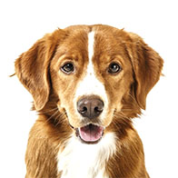

<ion-header>
  <ion-navbar>
    <ion-title text-center class="lupa-title">Mis Chats</ion-title>
  </ion-navbar>
</ion-header>

<ion-content padding>
  <ion-list *ngFor="let chat of list_chats" class="_list">
    <ion-item (click)="goToChat(chat)">
      <ion-avatar item-start>
        
      </ion-avatar>
      <h2>{{chat.conversandocon}}</h2>
    </ion-item>
  </ion-list>
</ion-content>